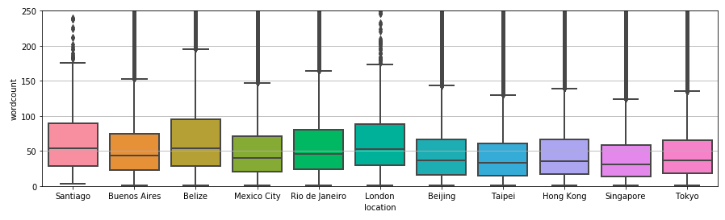
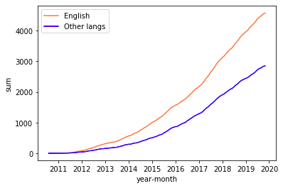

Hi I'm Minjae Kang
I am dreaming of becoming a data engineer who is able to extract meaningful values from data and make a profit from them. By working in the (big) data domain and gaining many valuable data-related
experience, I want to be professional in this domain. I consistently endeavour to become a decent data engineer by allocating my time for various data engineering domains range from Python, SQL to ETL and data warehousing.
Because IT technology is fast-growing and agile, I believe knowing the data analytic area is beneficial as a data engineer(although data engineering does not normally contain data analytics), and therefore
I have experience in deep learning and did some deep learning projects during my university study. As a junior data engineer, I might be lacking skills and experience compared to other senior experts, but I am a fast-growing and passionate person who wants to be professional in this domain.
In my leisure time, I consistently make an effort to become an expert in the (big) data domain.
I graduated from Computer Science Meng in 2021 with First Class Honours at University College London and currently looking forward to working as a data engineer.
Work Experience
Data Engineer Intern at Balaan; online shopping start-up
During the first 3 months of my internship duration, the company did not yet have a separate department for data science works, so I worked in a software development team.
Fortunately, I worked as a data engineer in the team and mainly dealt with the data mining process rather than their web application development.
As the company requires to gather data from its partners they had contracted with, the data mining process included automating the data crawling, cleaning, and mapping processes.
Balaan wanted to gather their product information and categorise the products according to their colour, origin, clothes category, and brand the company had defined.
Therefore, the data cleaning and mapping processes included mapping relatively unstructured data to structured data that the company defined.
Furthermore, I developed mapping tables(4 tables: colour, origin, clothes category, and brand mapping tables) that enables the Sales Team to modify the features that the company defined.
The mapping process described above was achieved by the mapping tables defined in the database and I developed a system that allows the Sales Team to modify it without any database system knowledge.
A month before I left the company, a Data Team was created and I had a chance to work in this department.
The goal of the team was to analyse data and extract meaningful data to gain an insight into the customers and make a benefit for the company.
As a newly born department, the first mission was to construct a system that aggregates business data of the company and creates its visualisations for the company decision makings.
We used the AWS cloud services to achieve this task as AWS cloud provides useful functions such as data storage and visualisation with flexible scalability.
The system created consisted of 3 AWS cloud services S3, Athena, and Quicksight. The S3 was used as a gathered data storage and the Athena and Quicksight were used for visualisations.
I developed a data pipeline for the Google Analytics (GA) data and automated the GA data retrieval process and its data transferring process.
The metrics and visualisations created by this system were used for evaluating the performance and profits of the company and for its decision making. They were also displayed in the company for employees to check their weekly goals and their progress.
Private A-levels Physics Tutor
After I graduated from A-levels and before I got into my university, I ran one-to-one teaching sessions 12 hours a week to three prospective A-levels students. I arranged the time slots for each student, prepared all the teaching materials, and handled admin tasks such as renting a classroom. Because each student had a different level of knowledge in Physics, I adopted different teaching approaches to each student according to their strengths and weaknesses.
Projects
Information Retrieval and Ranking with Deep Learning
As part of the 'Information Retrieval and Data Mining' coursework, I implemented information retrieval models that return a ranked list of documents relevant to a query.
There were two different coursework throughout the module:
1. Implement an inverted index and use tf-idf vector weighting to queries and documents so as to implemented BM25 and a query likelihood language model. In addition to the query likelihood language model, I also implemented Dirichlet smoothing, Laplace smoothing, and Lindstone correction.
2. With pre-trained dense word embeddings, GloVe, implement ranking models with Logistic Regression, LambdaMart, and Ranknet.
I used Python pandas, NumPy, nltk, and Tensorflow/Keras on Jupyter Notebook.
Comparative Analysis of Deep Learning-based News Topic Classification Models
As part of the 'Statistical Natural Language Processing Comparative Analysis' coursework, we(a group of 4 including me) carried out a Comparative Analysis of Deep learning-based news topic classification models. We conducted a comparative analysis of five deep learning-based techniques: RNN, GRU, LSTM, BiGRU, and Finetuned BERT for the task of news topic classification. With transfer learning with BERT, BERT has achieved state of the art performance in many tasks in NLP field with less data and computation time than traditional models. Therefore, the primary aim of this study was to explore the state-of-the-art pretrained word embedding, BERT, on news classification.
Introduction to Deep Learning Coursework
As part of the 'Introduction to Deep Learning' coursework, I had a chance to implement various unsupervised and supervised deep learning models with the Fashion MNIST dataset using Python(TensorFlow/Keras). There were three models I implemented: 1. Logistic Regression without Deep Learning libraries 2. Convolutional Denoising Autoencoder 3. Multi-label classifier with a pre-trained convolutional autoencoder. For the first task, I implemented a Logistic Regression with MLP and its gradient descent algorithm without any deep learning algorithms. For the second task, I implemented a convolutional denoising autoencoder that is able to restore noisy images to original images. Lastly, for the third task, I firstly implemented a convolutional autoencoder and used this pre-trained encoder of this autoencoder for a multi-label classifier to improve the overall performance.
Audio-driven Deep learning Research on Audio-to-Motion generation
For my final year project, I conducted deep learning research on Audio-to-Motion human motion generation(human synthesis). Traditional human synthesis heavily relied on visual data that requires high-end hardware, and it is labour-intensive. For example, In one of the most popular movies in 2020 'Avengers: End Game', Computer-Generated Imagery(CGI) technique was used to create realistic and manlike avatars, and actors had to wear specialised hardware on their bodies. Using the fact that human motions and speech are correlated, human motion can be predicted from human speech audio. The dataset was videos of weekly presidential addresses of President Barack Obama. The audio of these videos were converted into a trainable dataset with MFCC, and the facial motion was extracted using a facial behaviour analysis toolkit, Openface. Openface can give facial landmark coordinates from video footages. This research used the representation learning technique(denoising autoencoder) to reduce the dimensionality of the motion data and extract key features. Firstly, an autoencoder was trained for the facial motion-to-motion(facial landmark coordinates), and a latent representation was learned. Then the mapping between MFCC features of the audios and this motion latent representation was learned. Lastly, using the decoder of the motion-to-motion autoencoder, the facial motion can be deduced from the audio data. The mapping between audio data and the latent representation was learned with Gated Recurrent Unit(GRU) and Fully Connected layers.
Cross-department Smart Classroom IoT Project
I collaborated with Electrical Engineers to build a smart classroom prototype that autonomously controls a classroom environment(temperature, brightness, and humidity) and the room's security. We made an IoT system with a CC3200 launchpad and created a data pipeline from the launchpad to the IBM cloud with wifi. Using IBM Rednode, we developed a dashboard UI that monitors the room's conditions. As the only computer scientist in the team, I took charge of the data analysis section of the project. I used Python pandas and NumPy to do the data analysis. I went through Exploratory Data Analysis(EDA) process to investigate and analyse the data more deeply. The EDA process included evaluating statistical metrics/graphs and data visualisation to find1 trends and features of the data.
Airbnb Customer Trend Research
This research investigated the trend of one of the largest sharing economy platforms, Airbnb. Initially, the Airbnb manifesto stated that Airbnb fosters social interactions between hosts and guests. However, there is an ongoing debate saying that Airbnb is becoming a purely business transaction platform. Therefore, this research aimed to find out the answer to this question. We carried out this research by using reviews of English-speaking customers worldwide as a dataset. Using a pre-defined dictionary that tells which words belong to 'business' domain or 'social interaction' domain, these reviews could denote whether users treat Airbnb as a business platform or as a social interaction platform. We did the data analysis mainly with Python pandas and NumPy and some NLP libraries(e.g. nltk) to figure out the proportion of people using Airbnb as a business platform and social interaction platform. We compared the results with data visualisations. The data visualisations showed that the social interaction factors of Airbnb is decreasing, and Airbnb is turning into a business-oriented platform over the past ten years.
Software Development for Arthur Murray Dance Studio
I have experience in developing a web platform with two team members for a client from Authur Murray dance studio in the US. Authur Murray dance studio is a company that teaches dance to customers throughout the US and the UK. This project aimed to develop a web application that allows Arthur Murray dancers to upload their dance performances for a remote assessment. For a more accurate assessment, we used a Microsoft Kinect camera sensor that captures 3D human motions. I mainly took charge of developing the backend of the web application. The primary programming language used was Node.js(Express) with MongoDB as the database. I implemented functionalities of uploading, register, login/logout, password encryption, and Google Map integration.
Project Git Repositories
Comparative Analysis of Deep Learning-based News Topic Classification Models
Comparative Analysis of Deep learning-based News Topic Classification Models.pdfIntroduction to Deep Learning Coursework
Source CodeAudio-driven Deep Learning Approach for Human Motion Synthesis
Description
Final year project on audio-driven human motion generations. Whereas, traditional methods requires high-end hardwares and labour-intensive, this approach only needs human speech to predict human facial motions.
- Tensorflow/Keras was used to train the model.
- A state-of-the-art facial analysis toolkit, OpenFace was used to collect train dataset.
Cross-department Smart Classroom IoT Project
Description
Collaborated with students from other departments to deliver a smart classroom prototype that autonomously controls a classroom environment(temperature, brightness, and humidity) and monitors the security of the room.
- CC3200 and Energia for the beck-end development
- Node-Red for developing a data pipeline and a dashboard UI
Airbnb Trend Research with Data Analysis

- 
- 
Description
Investigated on Airbnb usage flow; see if Airbnb encourages social interactions between hosts and guests or it is(or turning into) a business-oriented platform that makes profit.
- Evaluated the trend of different countries of the world by analysing the user reviews with python(pandas, numpy, nltk).
- Data visualisations were used to compare the degree of trend change of each region.
Web App Development
Description
Developed a web application in which users can upload their dance performance videos for an detailed assessment anywhere in the world.
- Mainly took charge of the backend.
- The backend was run by Node.js(Express) with MongoDB database for user details and videos.
- Implemented user authentications and0 Google Map service with the Google Map API.
Web Crawler Project
Description
A web crawling programme with GUI. This programme checks the stock of second-hand books from Aladin second-hand bookshop and shows where you can buy those books you input.
- Python with its libraries selenium and bs4 were used for the crawling process.
- The GUI was implemented with tkinter